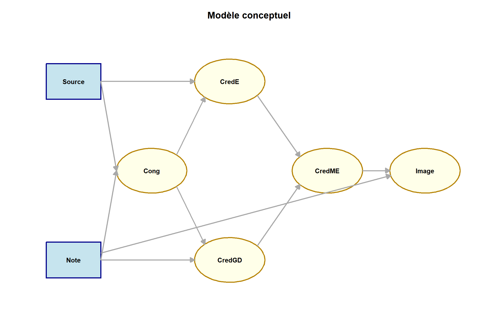
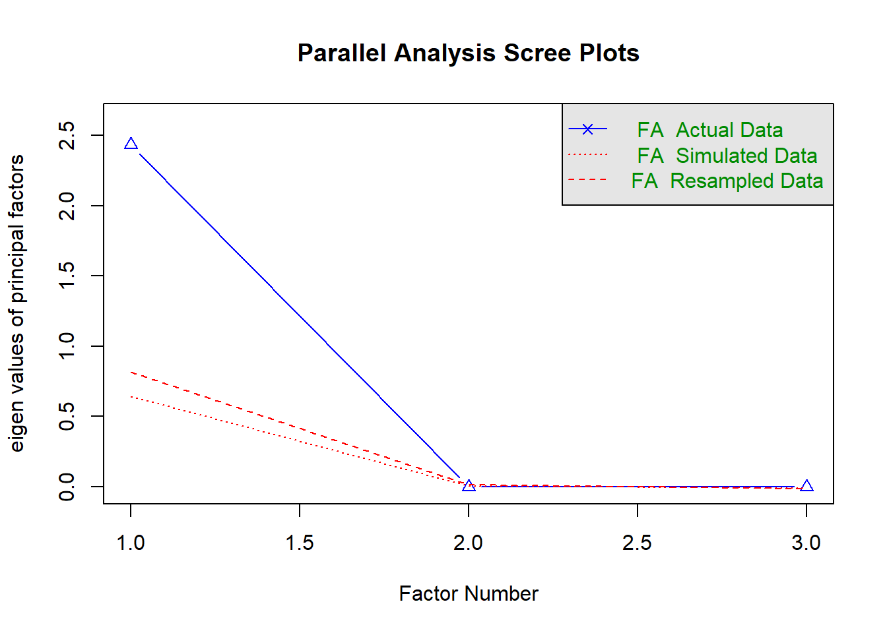

Analyse_vf
Introduction : Présentation du modèle conceptuel
Les résultats présentés ci-après sont tirés des travaux de la thèse de doctorat de Yoann Ducoux. L’objectif de l’étude quantitative menée est d’améliorer la compréhension de la structure cognitive qui permet aux candidats de passer de l’observation d’informations à propos d’un employeur à un sentiment favorable envers cet employeur. Par extension, cette étude aide les entreprises à favoriser les chances de réussite du processus de recrutement.
En vertu de la théorie des signaux (Spence, 1973; Stiglitz, 1975) et de son extension la théorie de la signalisation par les tierces parties de la marque employeur (Dineen et al.,2019) nous souhaitons démontrer le rôle central de la crédibilité dans la création de l’image employeur chez le candidat. L’étude présente donc en guise d’informations des signaux, c’est-à-dire des informations qui ne permettent pas au candidat de juger de la qualité de l’entreprise sur la base de ses préférences individuelles mais uniquement à travers la confiance qu’il peut avoir sur le fait que l’entreprise se révelera un employeur satisfaisant au regard de ses propres attentes.
Pour collecter les données, nous avons créé un stimuli qui présente la page carrière d’une entreprise fictive ABCompany. Le stimuli comporte deux variables : la note Glassdoor qui dispose de trois modalités (bonne/neutre/mauvaise) et une enquête de satisfaction des employés de l’entreprise dont la source prend deux modalités (interne/externe). Chaque répondant a donc été exposé à l’un des six scénarios comportant une combinaison de la Note Glassdoor et de la Source de l’enquête de satisfaction.
Les variables qui composent le modèle sont :
La Note Glassdoor de l’employeur fictif ABCompany qui varie entre 2,5/5 3,5/5 et 4,5/5.
La Source de l’enquête de satisfaction des employés de l’entreprise ABCompany.
La congruence des signaux (Note Glassdoor et enquête de satisfaction)
La crédibilité des signaux, c’est-à-dire la crédibilité de la Note Glassdoor et la crédibilité de l’enquête de satisfaction
La crédibilité de la marque employeur de l’entreprise ABCompany
L’image employeur de l’entreprise ABCompany
Et deux variables de contrôle : l’âge des répondants et la familiarité avec l’entreprise ABC, c’est-à-dire l’impression de connaitre l’entreprise avant d’avoir vu les signaux que nous leur présentons.
NB : En raison d’un erreur du questionnaire Qualtrics, les réponses des répondants du scénario 1 pour l’échelle de mesure de l’une des variables du modèle (CredE) n’ont pas été enregistrées. Nous avons donc fait une seconde collecte complémentaire, uniquement pour le scénario 1, qui a ensuite servi à imputer les données manquantes de la première collecte. La procédure d’imputation est expliquée dans le document.
Hypothèses de recherche
Sur la base de notre cadre conceptuel, nous formulons les hypothèses suivantes concernant les relations entre la note d’employeur, sa source, et l’image employeur de l’entreprise:
Relations directes
H1: La note Glassdoor de l’employeur (Note) influence positivement l’image employeur (Image).
H2: La note Glassdoor de l’employeur (Note) influence positivement la congruence des signaux (Cong).
H3: La source de l’enquête (Source) influence positivement la congruence des signaux (Cong).
H4: La note Glassdoor de l’employeur (Note) influence la crédibilité perçue de la note Glassdoor de l’employeur (CredGD).
H5: La source de l’enquête (Source) influence la crédibilité perçue de l’enquête (CredE).
H6: La congruence des signaux (Cong) influence positivement la crédibilité des signaux. - H6a: La congruence des signaux (Cong) influence positivement crédibilité de l’enquête (CredE). - H6b: La congruence des signaux (Cong) influence positivement crédibilité de la note Glassdoor (CredGD).
H7: La crédibilité de la marque employeur (CredME) influence positivement l’image employeur (Image).
H8: La crédibilité des signaux influence la crédibilité de la marque employeur(CredME). - H8a: La crédibilité de la note Glassdoor (CredGD) influence positivement crédibilité de la marque employeur (CredME). - H8b: La crédibilité de l’enquête (CredE) influence positvement crédibilité de la marque employeur (CredME).
Médiations
H9: Les effets de la source de l’enquête sur l’image employeur sont médiatisés par une chaîne de médiation (médiation séquentielle) impliquant dans l’ordre la congruence des signaux, la crédibilité des signaux et la crédibilité de la marque employeur. - H9a: La séquence de médiateurs congruence des signaux, crédibilité de la note Glassdoor, crédibilité de la marque employeur médiatise la relation entre la source de l’enquête et l’image employeur. - H9b: La séquence de médiateurs congruence des signaux, crédibilité de l’enquête, crédibilité de la marque employeur médiatise la relation entre la source de l’enquête et l’image employeur.
H10: Les effets de la source de l’enquête sur l’image employeur sont médiatisés par une chaîne de médiation (médiation séquentielle) impliquant dans l’ordre la crédibilité de l’enquête et la crédibilité de la marque employeur.
H11: Les effets de la note Glassdoor sur l’image employeur sont médiatisés par une chaîne de médiation (médiation séquentielle) impliquant dans l’ordre la crédibilité de la note Glassdoor et la crédibilité de la marque employeur.
H12: Les effets de la note sur l’image employeur sont médiatisés par une chaîne de médiation (médiation séquentielle) impliquant dans l’ordre la congruence des signaux, la crédibilité des signaux et la crédibilité de la marque employeur. - H12a: La séquence de médiateurs congruence des signaux, crédibilité de la note Glassdoor, crédibilité de la marque employeur médiatise la relation entre la note Glassdoor et l’image employeur. - H12b: La séquence de médiateurs congruence des signaux, crédibilité de l’enquête, crédibilité de la marque employeur médiatise la relation entre la note Glassdoor et l’image employeur.
library(dplyr)
library(mice)
library(VIM)
library(mitools)
library(knitr)
library(lavaan)
library(semTools)
library(haven)
library(sjlabelled)
library(sjmisc)
library(psych)
library(ggplot2)
# Importation des données
collecte_1 <- read_sav("data/collecte_1.sav")
collecte_2 <- read_sav("data/collecte_2.sav")
# Fusion des données
merged_df <- bind_rows(collecte_1, collecte_2)
# Conversion des variables labellisées en types R standard
merged_df <- haven::zap_labels(merged_df)2. Nettoyage et préparation des données
# 1. Filtrage sur la complétion
merged_df <- merged_df %>%
filter(Progress == 100) # Progression complète
# 2. Exclusion des temps aberrants
q_lower <- quantile(merged_df$Duration__in_seconds_, 0.05, na.rm = TRUE)
q_upper <- quantile(merged_df$Duration__in_seconds_, 0.95, na.rm = TRUE)
merged_df <- subset(merged_df,
Duration__in_seconds_ >= q_lower &
Duration__in_seconds_ <= q_upper)
# 3. Filtrage sur le check d'attention
merged_df <- merged_df %>%
filter(Informations_site_5 == 6) # Check d'attention
# 4. Création des variables scénario, Note et Source
merged_df <- merged_df %>%
mutate(
scenario = case_when(
!is.na(A25_baro_chrono_Page_Submit) ~ 1,
!is.na(A25extchrono_Page_Submit) ~ 2,
!is.na(A35baro_chrono_Page_Submit) ~ 3,
!is.na(A35extchrono_Page_Submit) ~ 4,
!is.na(A45_baro_chrono_Page_Submit) ~ 5,
!is.na(A45extchrono_Page_Submit) ~ 6,
TRUE ~ NA_real_
),
Note = case_when(
scenario %in% c(1, 2) ~ 2.5, # Codé comme 1
scenario %in% c(3, 4) ~ 3.5, # Codé comme 2
scenario %in% c(5, 6) ~ 4.5, # Codé comme 3
TRUE ~ NA_real_
),
Source = case_when(
scenario %in% c(1, 3, 5) ~ 1,
scenario %in% c(2, 4, 6) ~ 2,
TRUE ~ NA_real_
)
)
# 5. Conversion en numérique de toutes les variables
merged_df <- merged_df %>%
mutate(
across(c(starts_with("congruence_signaux_"),
starts_with("Cr_dibilit__ABC_"),
starts_with("Cr_dibilit__GD_"),
starts_with("Image_employeur_"),
starts_with("Familiarit__ABC_"),
starts_with("Cr_dibilit__baro_"),
starts_with("cr_dibilit__baro_ext_"),
age, genre), as_numeric)
)
# 6. Recodage de congruence_signaux_3 (item inversé)
merged_df <- merged_df %>%
mutate(
congruence_signaux_3 = case_when(
congruence_signaux_3 %in% 1:7 ~ 8 - congruence_signaux_3,
TRUE ~ congruence_signaux_3
)
)
# 7. Création de age_num
merged_df$age_num <- as.numeric(gsub("[^0-9]", "", merged_df$age))
# 8. Création des scores composites (sauf CredE qui sera créé après imputation)
merged_df <- merged_df %>%
mutate(
Cong = rowMeans(across(starts_with("congruence_signaux_")), na.rm = TRUE),
CredME = rowMeans(across(starts_with("Cr_dibilit__ABC_")), na.rm = TRUE),
CredGD = rowMeans(across(starts_with("Cr_dibilit__GD_")), na.rm = TRUE),
Image = rowMeans(across(starts_with("Image_employeur_")), na.rm = TRUE),
FAM = rowMeans(across(starts_with("Familiarit__ABC_")), na.rm = TRUE)
)
# 9. Variables à conserver pour l'analyse finale
vars_to_keep <- c(
# Variables de base
"Note", "Source", "scenario",
# Scores composites
"Cong", "CredGD", "CredME", "Image", "FAM",
# Variables de contrôle
"genre", "age_num",
# Items de crédibilité pour imputation
"Cr_dibilit__baro_int_1", "Cr_dibilit__baro_int_2",
"Cr_dibilit__baro_int_3", "Cr_dibilit__baro_int_4",
"cr_dibilit__baro_ext_1", "cr_dibilit__baro_ext_2",
"cr_dibilit__baro_ext_3", "cr_dibilit__baro_ext_4"
)
# 10. Préparation des sous-ensembles pour l'imputation
# Données pour la fusion (scénarios 2 à 6)
subset_for_merging <- merged_df %>%
filter(scenario %in% c(2:6)) %>%
select(all_of(vars_to_keep))
# Données complètes (tous scénarios, sans données manquantes)
subset_noDM <- merged_df %>%
filter(
scenario != 1 |
(scenario == 1 & !is.na(Cr_dibilit__baro_int_1))
) %>%
select(all_of(vars_to_keep))
# Variables à imputer spécifiquement pour le scénario 1
vars_to_impute <- c(
# Variables de base
"Note", "Source", "scenario",
# Scores composites
"Cong", "CredGD", "CredME", "Image", "FAM",
# Variables de contrôle
"genre", "age_num",
# Uniquement les items de crédibilité interne (pertinents pour scénario 1)
"Cr_dibilit__baro_int_1", "Cr_dibilit__baro_int_2",
"Cr_dibilit__baro_int_3", "Cr_dibilit__baro_int_4"
)
# Données du scénario 1 pour imputation
subset_scenario1 <- merged_df %>%
filter(scenario == 1) %>%
select(all_of(vars_to_impute))
# Conversion des variables labellisées en types R standard
subset_scenario1 <- subset_scenario1 %>%
mutate(across(everything(), function(x) {
if(inherits(x, "haven_labelled")) {
return(as.numeric(x))
} else {
return(x)
}
}))Imputation multiple et règle de Rubin
L’imputation multiple est une méthode statistique robuste pour traiter les données manquantes. Contrairement à l’imputation simple qui remplace chaque valeur manquante par une seule estimation, l’imputation multiple crée plusieurs jeux de données complets (généralement entre 5 et 20) où les valeurs manquantes sont remplacées par différentes estimations plausibles. Cette approche permet de capturer l’incertitude liée à l’imputation.
Dans notre étude, nous utilisons deux méthodes d’imputation différentes :
Predictive Mean Matching (PMM) : Cette méthode impute les valeurs manquantes en utilisant des valeurs observées provenant d’autres observations ayant des caractéristiques similaires. Elle préserve la distribution des données observées et est particulièrement adaptée aux variables continues.
Random Forest (RF) : Cette méthode utilise des algorithmes d’apprentissage automatique pour prédire les valeurs manquantes en fonction des relations complexes entre les variables. Elle est capable de capturer des relations non linéaires et des interactions.
Pour combiner les résultats des analyses effectuées sur chaque jeu de données imputé, nous appliquons la règle de Rubin (1987), qui permet d’obtenir des estimations non biaisées des paramètres et de leurs erreurs standard. Cette règle stipule que :
- L’estimation combinée d’un paramètre est la moyenne des estimations obtenues sur chaque jeu imputé.
- La variance totale associée à cette estimation est la somme de deux composantes :
- La variance intra-imputation (moyenne des variances estimées dans chaque jeu)
- La variance inter-imputation (variance des estimations entre les jeux), multipliée par un facteur d’ajustement (1 + 1/m, où m est le nombre d’imputations)
Cette approche nous permet d’obtenir des résultats plus fiables en tenant compte à la fois de l’incertitude liée à l’échantillonnage et de celle liée à l’imputation des données manquantes.
# 11. Configuration pour l'imputation
predictors <- c("Image", "Cong", "CredME", "CredGD")
# 12. Imputation
# PMM
imp_pmm <- mice(subset_scenario1, m = 10, method = "pmm",
predictorMatrix = quickpred(subset_scenario1,
include = predictors),
seed = 123)
# RF
imp_rf <- mice(subset_scenario1, m = 10, method = "rf",
predictorMatrix = quickpred(subset_scenario1,
include = predictors),
seed = 123)
# 13. Création des jeux de données finaux avec fusion des items de crédibilité
create_final_datasets <- function(imp, subset_for_merging) {
datasets <- vector("list", imp$m)
for(i in 1:imp$m) {
# Récupération des données imputées du scénario 1
imputed_data <- complete(imp, action = i)
# Fusion avec les autres scénarios
combined_data <- bind_rows(imputed_data, subset_for_merging) %>%
arrange(scenario)
# Création des variables CredE fusionnées
combined_data <- combined_data %>%
mutate(
CredE1 = case_when(
Source == 1 ~ Cr_dibilit__baro_int_1,
Source == 2 ~ cr_dibilit__baro_ext_1
),
CredE2 = case_when(
Source == 1 ~ Cr_dibilit__baro_int_2,
Source == 2 ~ cr_dibilit__baro_ext_2
),
CredE3 = case_when(
Source == 1 ~ Cr_dibilit__baro_int_3,
Source == 2 ~ cr_dibilit__baro_ext_3
),
CredE4 = case_when(
Source == 1 ~ Cr_dibilit__baro_int_4,
Source == 2 ~ cr_dibilit__baro_ext_4
),
CredE = rowMeans(cbind(CredE1, CredE2, CredE3, CredE4), na.rm = TRUE)
)
datasets[[i]] <- combined_data
}
return(datasets)
}
# Création des trois jeux de données finaux
subset_pmm <- create_final_datasets(imp_pmm, subset_for_merging)
subset_rf <- create_final_datasets(imp_rf, subset_for_merging)
# Application de la même logique aux données complètes
subset_noDM <- subset_noDM %>%
mutate(
CredE1 = case_when(
Source == 1 ~ Cr_dibilit__baro_int_1,
Source == 2 ~ cr_dibilit__baro_ext_1
),
CredE2 = case_when(
Source == 1 ~ Cr_dibilit__baro_int_2,
Source == 2 ~ cr_dibilit__baro_ext_2
),
CredE3 = case_when(
Source == 1 ~ Cr_dibilit__baro_int_3,
Source == 2 ~ cr_dibilit__baro_ext_3
),
CredE4 = case_when(
Source == 1 ~ Cr_dibilit__baro_int_4,
Source == 2 ~ cr_dibilit__baro_ext_4
),
CredE = rowMeans(cbind(CredE1, CredE2, CredE3, CredE4), na.rm = TRUE)
)
# 14. Vérification des données manquantes dans chaque jeu
check_missing <- function(data, name) {
cat("\nVérification des valeurs manquantes dans", name, ":\n")
print(sapply(data, function(x) sum(is.na(x))))
}
check_missing(subset_noDM, "subset_noDM")
check_missing(subset_pmm[[1]], "premier jeu PMM")
check_missing(subset_rf[[1]], "premier jeu RF")#Procédure de vérification
Vérification des manipulations expérimentales
Avant de procéder aux analyses principales, nous vérifions l’efficacité des manipulations expérimentales entre les différents scénarios. Ces analyses ANOVA nous permettent de confirmer que les participants ont bien perçu les différences entre les conditions expérimentales, notamment concernant les informations présentées sur Glassdoor et sur le site de l’entreprise.
# Définition des items à vérifier
items_check <- c("Info_Glassdoor_1", "Info_Glassdoor_2",
"Info_Glassdoor_3", "Info_Glassdoor_4",
"Informations_site_1", "Informations_site_2",
"Informations_site_3", "Informations_site_4", "Informations_site_5")
# Analyse ANOVA pour chaque item par scénario
for (item in items_check) {
cat("\n=== ANOVA for", item, "by scenario ===\n")
frm <- as.formula(paste(item, "~ factor(scenario)"))
mod <- aov(frm, data=merged_df)
print(summary(mod))
}Interprétation des résultats des ANOVAs
L’analyse des résultats des ANOVAs nous permet d’évaluer systématiquement l’efficacité de nos manipulations expérimentales à travers les différents scénarios :
Manipulation de la note et source d’évaluation (Glassdoor)
- Info_Glassdoor_1 - “La note sur l’employeur ABCompany qui apparaît sur son site carrière émane de Glassdoor”
- Non significatif : F(5,399) = 1.695, p = 0.135
- La reconnaissance de Glassdoor comme source est similaire dans tous les scénarios, suggérant une attribution claire de la source indépendamment des conditions expérimentales.
- Info_Glassdoor_2 - “Le résultat de cette évaluation est indépendant de l’entreprise ABCompany”
- Non significatif : F(5,399) = 1.449, p = 0.206
- La perception d’indépendance de l’évaluation reste constante à travers les scénarios, confirmant l’uniformité de cette dimension dans notre dispositif expérimental.
- Info_Glassdoor_3 - “D’après les informations de Glassdoor, l’entreprise ABCompany est un bon employeur”
- Très significatif : F(5,399) = 76.96, p < 0.001
- Cette différence hautement significative confirme que notre manipulation de la note (2.5, 3.5, 4.5) a été correctement perçue par les participants, validant le succès de cette manipulation cruciale.
- Info_Glassdoor_4 - “D’après les informations de Glassdoor, les employés de ABC recommandent de travailler pour cet employeur”
- Très significatif : F(5,399) = 35.29, p < 0.001
- Cette différence significative renforce la confirmation de l’efficacité de notre manipulation des évaluations, montrant que les participants perçoivent des niveaux différents de recommandation selon les scénarios.
Perception du site carrière
- Informations_site_1 - “L’entreprise ABCompany est à l’origine de ce site internet”
- Non significatif : F(5,399) = 0.947, p = 0.451
- La perception de l’entreprise comme source du site reste constante entre les scénarios, assurant une base homogène pour l’interprétation des autres variables.
- Informations_site_2 - “Le site que j’ai vu est le site carrière de l’entreprise ABCompany”
- Non significatif : F(5,399) = 0.494, p = 0.781
- L’identification uniforme du site comme site carrière à travers les scénarios assure la cohérence de notre environnement expérimental.
- Informations_site_3 - “Ce site carrière fait apparaître un taux de recommandation de l’entreprise ABCompany comme employeur”
- Non significatif : F(5,399) = 1.184, p = 0.316
- La visibilité perçue du taux de recommandation est constante entre les scénarios, confirmant la standardisation de cet élément dans notre design.
- Informations_site_4 - “Ce site carrière fait apparaître une note sur ABCompany comme employeur”
- Non significatif : F(5,399) = 1.659, p = 0.144
- La perception de la présence d’une note est homogène à travers les différentes conditions, soutenant la cohérence de notre présentation expérimentale.
- Informations_site_5 - Check d’attention
- Non significatif : F(5,399) = 1.364, p = 0.237
- Cette homogénéité est attendue pour un item de vérification d’attention, confirmant la fiabilité de notre filtre d’inclusion des participants.
Cette analyse systématique révèle que nos manipulations expérimentales ont fonctionné comme prévu. Spécifiquement, les différences significatives observées pour les items 3 et 4 de Glassdoor confirment que la manipulation de la note de l’employeur a été efficacement perçue, tandis que l’homogénéité des autres perceptions atteste de la standardisation appropriée des éléments non manipulés. Ces vérifications valident la robustesse de notre design expérimental et renforcent la fiabilité des analyses subséquentes.
Ces vérifications confirment que nos manipulations expérimentales ont fonctionné comme prévu, ce qui nous permet de procéder avec confiance aux analyses psychométriques et structurelles suivantes.
3. Analyses psychométriques
# Fonction pour les analyses psychométriques complètes
analyse_psychometrique <- function(data, nom_echelle, items) {
cat("\n=== Analyse psychométrique de", nom_echelle, "===\n")
# Extraction des données de l'échelle
data_echelle <- data[, items, drop = FALSE]
complete_cases <- complete.cases(data_echelle)
data_complete <- data_echelle[complete_cases, , drop = FALSE]
# 1. Statistiques descriptives
cat("\n1. Statistiques descriptives :\n")
print(summary(data_echelle))
# 2. Tests de normalité et adéquation
cat("\n2. Tests de normalité et adéquation :\n")
tryCatch({
# KMO
mat_cor <- cor(data_complete)
kmo <- KMO(mat_cor)
cat("- KMO =", round(kmo$MSA, 3), "\n")
# Test de Bartlett
n <- nrow(data_complete)
bartlett <- cortest.bartlett(mat_cor, n = n)
cat("- Test de Bartlett : chi2 =", round(bartlett$chisq, 2),
", ddl =", bartlett$df,
", p =", format.pval(bartlett$p.value), "\n")
}, error = function(e) {
cat("Impossible de calculer KMO/Bartlett:", conditionMessage(e), "\n")
})
# 3. Fiabilité (Alpha de Cronbach)
cat("\n3. Fiabilité :\n")
tryCatch({
alpha_res <- psych::alpha(data_echelle)
cat(sprintf("- Alpha de Cronbach = %.3f\n", alpha_res$total$raw_alpha))
cat("\nStatistiques par item si supprimé :\n")
print(round(alpha_res$alpha.drop, 3))
cat("\nCorrélations item-total :\n")
print(round(alpha_res$item.stats, 3))
}, error = function(e) {
cat("- Impossible de calculer l'alpha de Cronbach:", conditionMessage(e), "\n")
alpha_res <- list(total = list(raw_alpha = NA))
})
# 4. Analyse factorielle
cat("\n4. Analyse factorielle :\n")
tryCatch({
if(sum(complete_cases) > 1) {
# Test du nombre de facteurs
nfactors <- fa.parallel(data_complete, fa = "fa", fm = "ml")
cat("\nNombre de facteurs suggéré :", nfactors$nfact, "\n")
# Analyse factorielle
fa_res <- fa(data_complete, nfactors = 1, fm = "ml", rotate = "none")
cat("\n- Loadings :\n")
print(round(fa_res$loadings, 3))
cat("\n- Communalités :\n")
print(round(fa_res$communality, 3))
cat(sprintf("\n- Variance expliquée : %.2f%%\n",
fa_res$Vaccounted[2,1] * 100))
# Résidus
cat("\n- Résidus :\n")
residuals <- factor.residuals(mat_cor, fa_res$loadings)
cat("RMSR =", sqrt(mean(residuals[lower.tri(residuals)]^2)), "\n")
} else {
cat("Pas assez de données complètes pour l'analyse factorielle\n")
fa_res <- NULL
}
}, error = function(e) {
cat("Erreur dans l'analyse factorielle:", conditionMessage(e), "\n")
fa_res <- NULL
})
return(list(
normalite = list(shapiro = NA,
skew = sapply(data_echelle, skew),
kurtosis = sapply(data_echelle, kurtosi)),
kmo = if(exists("kmo")) kmo$MSA else NA,
bartlett = if(exists("bartlett")) bartlett else NA,
alpha = alpha_res$total$raw_alpha,
fa = fa_res
))
}
# Analyses psychométriques pour les échelles avec items dans merged_df
# CredGD
items_CredGD <- paste0("Cr_dibilit__GD_", 1:4)
analyse_CredGD <- analyse_psychometrique(merged_df, "CredGD", items_CredGD)
=== Analyse psychométrique de CredGD ===
1. Statistiques descriptives :
Cr_dibilit__GD_1 Cr_dibilit__GD_2 Cr_dibilit__GD_3 Cr_dibilit__GD_4
Min. :1.000 Min. :1.000 Min. :1.000 Min. :1.000
1st Qu.:3.000 1st Qu.:3.000 1st Qu.:4.000 1st Qu.:4.000
Median :4.000 Median :4.000 Median :4.000 Median :4.000
Mean :3.951 Mean :3.765 Mean :4.247 Mean :4.178
3rd Qu.:5.000 3rd Qu.:4.000 3rd Qu.:5.000 3rd Qu.:5.000
Max. :7.000 Max. :7.000 Max. :7.000 Max. :7.000
2. Tests de normalité et adéquation :
- KMO = 0.599
- Test de Bartlett : chi2 = 189.51 , ddl = 6 , p = < 2.22e-16
3. Fiabilité :
- Alpha de Cronbach = 0.563
Statistiques par item si supprimé :
raw_alpha std.alpha G6(smc) average_r S/N alpha se var.r
Cr_dibilit__GD_1 0.533 0.565 0.503 0.302 1.298 0.041 0.031
Cr_dibilit__GD_2 0.526 0.579 0.502 0.315 1.377 0.040 0.021
Cr_dibilit__GD_3 0.436 0.436 0.346 0.205 0.774 0.047 0.004
Cr_dibilit__GD_4 0.483 0.506 0.408 0.255 1.026 0.043 0.001
med.r
Cr_dibilit__GD_1 0.294
Cr_dibilit__GD_2 0.238
Cr_dibilit__GD_3 0.238
Cr_dibilit__GD_4 0.248
Corrélations item-total :
n raw.r std.r r.cor r.drop mean sd
Cr_dibilit__GD_1 405 0.720 0.636 0.409 0.327 3.951 1.520
Cr_dibilit__GD_2 405 0.645 0.621 0.397 0.306 3.765 1.265
Cr_dibilit__GD_3 405 0.669 0.744 0.645 0.456 4.247 0.914
Cr_dibilit__GD_4 405 0.630 0.688 0.551 0.366 4.178 1.028
4. Analyse factorielle :Parallel analysis suggests that the number of factors = 3 and the number of components = NA
Nombre de facteurs suggéré : 3
- Loadings :
Loadings:
ML1
Cr_dibilit__GD_1 0.337
Cr_dibilit__GD_2 0.355
Cr_dibilit__GD_3 0.785
Cr_dibilit__GD_4 0.602
ML1
SS loadings 1.218
Proportion Var 0.305
- Communalités :
Cr_dibilit__GD_1 Cr_dibilit__GD_2 Cr_dibilit__GD_3 Cr_dibilit__GD_4
0.114 0.126 0.616 0.362
- Variance expliquée : 30.46%
- Résidus :
RMSR = 0.06691895 # CredME
items_CredME <- paste0("Cr_dibilit__ABC_", 1:3)
analyse_CredME <- analyse_psychometrique(merged_df, "CredME", items_CredME)
=== Analyse psychométrique de CredME ===
1. Statistiques descriptives :
Cr_dibilit__ABC_1 Cr_dibilit__ABC_2 Cr_dibilit__ABC_3
Min. :1.000 Min. :1.000 Min. :1.000
1st Qu.:3.000 1st Qu.:4.000 1st Qu.:3.000
Median :4.000 Median :4.000 Median :4.000
Mean :4.025 Mean :3.988 Mean :3.886
3rd Qu.:5.000 3rd Qu.:4.000 3rd Qu.:4.000
Max. :7.000 Max. :7.000 Max. :7.000
2. Tests de normalité et adéquation :
- KMO = 0.723
- Test de Bartlett : chi2 = 580.68 , ddl = 3 , p = < 2.22e-16
3. Fiabilité :
- Alpha de Cronbach = 0.859
Statistiques par item si supprimé :
raw_alpha std.alpha G6(smc) average_r S/N alpha se var.r
Cr_dibilit__ABC_1 0.847 0.848 0.736 0.736 5.587 0.015 NA
Cr_dibilit__ABC_2 0.800 0.802 0.670 0.670 4.051 0.020 NA
Cr_dibilit__ABC_3 0.761 0.767 0.622 0.622 3.286 0.023 NA
med.r
Cr_dibilit__ABC_1 0.736
Cr_dibilit__ABC_2 0.670
Cr_dibilit__ABC_3 0.622
Corrélations item-total :
n raw.r std.r r.cor r.drop mean sd
Cr_dibilit__ABC_1 405 0.875 0.863 0.742 0.694 4.025 1.097
Cr_dibilit__ABC_2 405 0.877 0.888 0.807 0.740 3.988 0.937
Cr_dibilit__ABC_3 405 0.903 0.906 0.845 0.777 3.886 0.998
4. Analyse factorielle :Parallel analysis suggests that the number of factors = 1 and the number of components = NA
Nombre de facteurs suggéré : 1
- Loadings :
Loadings:
ML1
Cr_dibilit__ABC_1 0.752
Cr_dibilit__ABC_2 0.827
Cr_dibilit__ABC_3 0.891
ML1
SS loadings 2.043
Proportion Var 0.681
- Communalités :
Cr_dibilit__ABC_1 Cr_dibilit__ABC_2 Cr_dibilit__ABC_3
0.565 0.684 0.793
- Variance expliquée : 68.07%
- Résidus :
RMSR = 3.566067e-08 # Congruence
items_Cong <- paste0("congruence_signaux_", 1:3)
analyse_Cong <- analyse_psychometrique(merged_df, "Congruence", items_Cong)
=== Analyse psychométrique de Congruence ===
1. Statistiques descriptives :
congruence_signaux_1 congruence_signaux_2 congruence_signaux_3
Min. :1.000 Min. :1.000 Min. :1.000
1st Qu.:3.000 1st Qu.:3.000 1st Qu.:3.000
Median :4.000 Median :4.000 Median :4.000
Mean :3.933 Mean :4.077 Mean :3.852
3rd Qu.:5.000 3rd Qu.:5.000 3rd Qu.:5.000
Max. :7.000 Max. :7.000 Max. :7.000
2. Tests de normalité et adéquation :
- KMO = 0.716
- Test de Bartlett : chi2 = 558.56 , ddl = 3 , p = < 2.22e-16
3. Fiabilité :
- Alpha de Cronbach = 0.853
Statistiques par item si supprimé :
raw_alpha std.alpha G6(smc) average_r S/N alpha se var.r
congruence_signaux_1 0.785 0.788 0.650 0.650 3.712 0.021 NA
congruence_signaux_2 0.752 0.752 0.603 0.603 3.033 0.025 NA
congruence_signaux_3 0.846 0.848 0.736 0.736 5.573 0.015 NA
med.r
congruence_signaux_1 0.650
congruence_signaux_2 0.603
congruence_signaux_3 0.736
Corrélations item-total :
n raw.r std.r r.cor r.drop mean sd
congruence_signaux_1 405 0.887 0.885 0.805 0.733 3.933 1.528
congruence_signaux_2 405 0.897 0.903 0.842 0.774 4.077 1.394
congruence_signaux_3 405 0.857 0.853 0.721 0.671 3.852 1.538
4. Analyse factorielle :Parallel analysis suggests that the number of factors = 1 and the number of components = NA
Nombre de facteurs suggéré : 1
- Loadings :
Loadings:
ML1
congruence_signaux_1 0.826
congruence_signaux_2 0.891
congruence_signaux_3 0.730
ML1
SS loadings 2.009
Proportion Var 0.670
- Communalités :
congruence_signaux_1 congruence_signaux_2 congruence_signaux_3
0.682 0.794 0.532
- Variance expliquée : 66.94%
- Résidus :
RMSR = 7.430452e-08 # Image
items_Image <- paste0("Image_employeur_", 1:3)
analyse_Image <- analyse_psychometrique(merged_df, "Image", items_Image)
=== Analyse psychométrique de Image ===
1. Statistiques descriptives :
Image_employeur_1 Image_employeur_2 Image_employeur_3
Min. :1.00 Min. :1.000 Min. :1.00
1st Qu.:3.00 1st Qu.:3.000 1st Qu.:3.00
Median :5.00 Median :4.000 Median :5.00
Mean :4.38 Mean :4.064 Mean :4.43
3rd Qu.:5.00 3rd Qu.:5.000 3rd Qu.:6.00
Max. :7.00 Max. :7.000 Max. :7.00
2. Tests de normalité et adéquation :
- KMO = 0.762
- Test de Bartlett : chi2 = 954.7 , ddl = 3 , p = < 2.22e-16
3. Fiabilité :
- Alpha de Cronbach = 0.927
Statistiques par item si supprimé :
raw_alpha std.alpha G6(smc) average_r S/N alpha se var.r
Image_employeur_1 0.900 0.901 0.819 0.819 9.071 0.010 NA
Image_employeur_2 0.903 0.903 0.824 0.824 9.350 0.010 NA
Image_employeur_3 0.880 0.881 0.787 0.787 7.381 0.012 NA
med.r
Image_employeur_1 0.819
Image_employeur_2 0.824
Image_employeur_3 0.787
Corrélations item-total :
n raw.r std.r r.cor r.drop mean sd
Image_employeur_1 405 0.929 0.931 0.877 0.844 4.380 1.351
Image_employeur_2 405 0.932 0.930 0.873 0.841 4.064 1.444
Image_employeur_3 405 0.942 0.943 0.904 0.869 4.430 1.376
4. Analyse factorielle :
Parallel analysis suggests that the number of factors = 1 and the number of components = NA
Nombre de facteurs suggéré : 1
- Loadings :
Loadings:
ML1
Image_employeur_1 0.889
Image_employeur_2 0.885
Image_employeur_3 0.926
ML1
SS loadings 2.431
Proportion Var 0.810
- Communalités :
Image_employeur_1 Image_employeur_2 Image_employeur_3
0.791 0.783 0.858
- Variance expliquée : 81.05%
- Résidus :
RMSR = 1.422821e-09 # FAM
items_FAM <- paste0("Familiarit__ABC_", 1:3)
analyse_FAM <- analyse_psychometrique(merged_df, "Familiarité", items_FAM)
=== Analyse psychométrique de Familiarité ===
1. Statistiques descriptives :
Familiarit__ABC_1 Familiarit__ABC_2 Familiarit__ABC_3
Min. :1.000 Min. :1.000 Min. :1.000
1st Qu.:1.000 1st Qu.:1.000 1st Qu.:1.000
Median :1.000 Median :1.000 Median :1.000
Mean :1.328 Mean :1.269 Mean :1.286
3rd Qu.:1.000 3rd Qu.:1.000 3rd Qu.:1.000
Max. :7.000 Max. :6.000 Max. :6.000
2. Tests de normalité et adéquation :
- KMO = 0.75
- Test de Bartlett : chi2 = 1048.21 , ddl = 3 , p = < 2.22e-16
3. Fiabilité :
- Alpha de Cronbach = 0.929
Statistiques par item si supprimé :
raw_alpha std.alpha G6(smc) average_r S/N alpha se var.r
Familiarit__ABC_1 0.936 0.937 0.881 0.881 14.766 0.006 NA
Familiarit__ABC_2 0.878 0.881 0.787 0.787 7.405 0.012 NA
Familiarit__ABC_3 0.883 0.889 0.801 0.801 8.027 0.011 NA
med.r
Familiarit__ABC_1 0.881
Familiarit__ABC_2 0.787
Familiarit__ABC_3 0.801
Corrélations item-total :
n raw.r std.r r.cor r.drop mean sd
Familiarit__ABC_1 405 0.926 0.919 0.841 0.819 1.328 0.908
Familiarit__ABC_2 405 0.947 0.952 0.926 0.887 1.269 0.773
Familiarit__ABC_3 405 0.944 0.947 0.917 0.875 1.286 0.810
4. Analyse factorielle :Parallel analysis suggests that the number of factors = 1 and the number of components = NA
Nombre de facteurs suggéré : 1
- Loadings :
Loadings:
ML1
Familiarit__ABC_1 0.846
Familiarit__ABC_2 0.946
Familiarit__ABC_3 0.931
ML1
SS loadings 2.477
Proportion Var 0.826
- Communalités :
Familiarit__ABC_1 Familiarit__ABC_2 Familiarit__ABC_3
0.716 0.895 0.866
- Variance expliquée : 82.58%
- Résidus :
RMSR = 4.386829e-08 # Analyse de CredE sur subset_noDM car les items sont créés après imputation
items_CredE <- c("CredE1", "CredE2", "CredE3", "CredE4")
analyse_CredE <- analyse_psychometrique(subset_noDM, "CredE", items_CredE)
=== Analyse psychométrique de CredE ===
1. Statistiques descriptives :
CredE1 CredE2 CredE3 CredE4
Min. :1.000 Min. :1.000 Min. :1.000 Min. :1.000
1st Qu.:3.000 1st Qu.:3.000 1st Qu.:4.000 1st Qu.:3.000
Median :4.000 Median :4.000 Median :4.000 Median :4.000
Mean :3.988 Mean :3.748 Mean :3.912 Mean :3.721
3rd Qu.:5.000 3rd Qu.:5.000 3rd Qu.:4.750 3rd Qu.:4.000
Max. :7.000 Max. :7.000 Max. :7.000 Max. :7.000
2. Tests de normalité et adéquation :
- KMO = 0.781
- Test de Bartlett : chi2 = 565.16 , ddl = 6 , p = < 2.22e-16
3. Fiabilité :
- Alpha de Cronbach = 0.829
Statistiques par item si supprimé :
raw_alpha std.alpha G6(smc) average_r S/N alpha se var.r med.r
CredE1 0.805 0.817 0.767 0.599 4.474 0.019 0.014 0.550
CredE2 0.836 0.843 0.795 0.642 5.384 0.016 0.008 0.641
CredE3 0.758 0.764 0.702 0.519 3.243 0.024 0.014 0.512
CredE4 0.738 0.752 0.679 0.502 3.029 0.025 0.007 0.550
Corrélations item-total :
n raw.r std.r r.cor r.drop mean sd
CredE1 330 0.800 0.791 0.685 0.616 3.988 1.325
CredE2 330 0.766 0.751 0.608 0.554 3.748 1.353
CredE3 330 0.845 0.863 0.818 0.737 3.912 1.041
CredE4 330 0.870 0.879 0.849 0.760 3.721 1.170
4. Analyse factorielle :Parallel analysis suggests that the number of factors = 1 and the number of components = NA
Nombre de facteurs suggéré : 1
- Loadings :
Loadings:
ML1
CredE1 0.698
CredE2 0.606
CredE3 0.829
CredE4 0.887
ML1
SS loadings 2.328
Proportion Var 0.582
- Communalités :
CredE1 CredE2 CredE3 CredE4
0.488 0.367 0.688 0.787
- Variance expliquée : 58.22%
- Résidus :
RMSR = 0.02698483 Analyses psychométriques sur données imputées
# Fonction pour analyser CredE sur les jeux imputés
analyse_CredE_imputed <- function(imp_datasets, nom_echelle = "CredE (imputé)", items = c("CredE1", "CredE2", "CredE3", "CredE4")) {
cat("\n=== Analyse psychométrique de", nom_echelle, "sur données imputées ===\n")
# Initialisation des résultats
alphas <- numeric(length(imp_datasets))
kmos <- numeric(length(imp_datasets))
variances <- numeric(length(imp_datasets))
# Analyse sur chaque jeu imputé
for (i in 1:length(imp_datasets)) {
data <- imp_datasets[[i]]
# Extraction des données de l'échelle
data_echelle <- data[, items, drop = FALSE]
complete_cases <- complete.cases(data_echelle)
data_complete <- data_echelle[complete_cases, , drop = FALSE]
# Alpha de Cronbach
alpha_res <- psych::alpha(data_echelle)
alphas[i] <- alpha_res$total$raw_alpha
# KMO et analyse factorielle
if(sum(complete_cases) > 1) {
mat_cor <- cor(data_complete)
kmo_res <- KMO(mat_cor)
kmos[i] <- kmo_res$MSA
fa_res <- fa(data_complete, nfactors = 1, fm = "ml", rotate = "none")
variances[i] <- fa_res$Vaccounted[2,1] * 100
}
}
# Résultats combinés
cat("\nRésultats combinés sur", length(imp_datasets), "jeux imputés :\n")
cat("- Alpha de Cronbach moyen =", round(mean(alphas, na.rm = TRUE), 3), "\n")
cat("- KMO moyen =", round(mean(kmos, na.rm = TRUE), 3), "\n")
cat("- Variance expliquée moyenne =", round(mean(variances, na.rm = TRUE), 2), "%\n")
return(list(
alpha_mean = mean(alphas, na.rm = TRUE),
kmo_mean = mean(kmos, na.rm = TRUE),
variance_mean = mean(variances, na.rm = TRUE)
))
}
# Analyse de CredE sur les jeux imputés PMM
analyse_CredE_pmm <- analyse_CredE_imputed(subset_pmm)
=== Analyse psychométrique de CredE (imputé) sur données imputées ===
Résultats combinés sur 10 jeux imputés :
- Alpha de Cronbach moyen = 0.821
- KMO moyen = 0.758
- Variance expliquée moyenne = 56.98 %# Analyse de CredE sur les jeux imputés RF
analyse_CredE_rf <- analyse_CredE_imputed(subset_rf)
=== Analyse psychométrique de CredE (imputé) sur données imputées ===
Résultats combinés sur 10 jeux imputés :
- Alpha de Cronbach moyen = 0.801
- KMO moyen = 0.771
- Variance expliquée moyenne = 53.46 %Synthèse des analyses psychométriques
Cette section présente les analyses psychométriques des différentes échelles utilisées dans notre étude expérimentale. Ces analyses permettent d’évaluer la qualité et la fiabilité des instruments de mesure avant de procéder aux analyses structurelles.
Crédibilité de Glassdoor (CredGD)
L’échelle de crédibilité perçue de Glassdoor comprend quatre items évalués sur une échelle de Likert à 7 points.
Propriétés psychométriques : - Les scores moyens varient entre 3,77 et 4,25, indiquant une perception modérément positive - L’indice KMO (0,599) est acceptable mais modeste - La fiabilité interne (α = 0,563) est en dessous du seuil conventionnel de 0,70 - L’analyse factorielle suggère une structure à trois facteurs, ce qui est problématique pour une échelle censée mesurer un construit unique - Les saturations factorielles sont hétérogènes (de 0,337 à 0,785) - La variance expliquée est limitée (30,46%)
Cette échelle présente des faiblesses psychométriques qui invitent à interpréter les résultats la concernant avec prudence.
Crédibilité de la Méthode d’Évaluation (CredME)
Cette échelle à trois items mesure la crédibilité perçue de la méthode d’évaluation utilisée par l’entreprise.
Propriétés psychométriques : - Les moyennes des items sont homogènes (entre 3,89 et 4,03) - L’indice KMO (0,723) indique une bonne adéquation des données - Excellente fiabilité interne (α = 0,859) - Structure factorielle unidimensionnelle confirmée - Saturations factorielles élevées (0,752 à 0,891) - Variance expliquée satisfaisante (68,07%)
Cette échelle présente d’excellentes qualités psychométriques, soutenant sa validité et sa fiabilité.
Congruence des Signaux (Cong)
L’échelle de congruence mesure la cohérence perçue entre les différentes sources d’information.
Propriétés psychométriques : - Les scores moyens sont homogènes (entre 3,85 et 4,08) - KMO satisfaisant (0,716) - Bonne fiabilité interne (α = 0,853) - Structure factorielle unidimensionnelle confirmée - Saturations factorielles élevées (0,730 à 0,891) - Variance expliquée satisfaisante (66,94%)
Les propriétés psychométriques de cette échelle sont très satisfaisantes.
Image de l’Employeur (Image)
Cette échelle à trois items évalue la perception globale de l’image de l’employeur.
Propriétés psychométriques : - Scores moyens relativement élevés (entre 4,06 et 4,43) - Excellent KMO (0,762) - Fiabilité interne remarquable (α = 0,927) - Structure factorielle unidimensionnelle confirmée - Saturations factorielles très élevées (0,885 à 0,926) - Variance expliquée excellente (81,05%)
Cette échelle présente des qualités psychométriques exceptionnelles, ce qui en fait une mesure très fiable du concept d’image de l’employeur.
Familiarité avec l’Entreprise (FAM)
L’échelle de familiarité mesure la connaissance préalable que les participants avaient de l’entreprise.
Propriétés psychométriques : - Scores moyens très bas (entre 1,27 et 1,33 sur 7) - Bon KMO (0,750) - Fiabilité interne excellente (α = 0,929) - Structure factorielle unidimensionnelle confirmée - Saturations factorielles très élevées (0,846 à 0,946) - Variance expliquée excellente (82,58%)
Les scores très bas indiquent une faible familiarité préalable avec l’entreprise, ce qui est cohérent avec l’utilisation d’une entreprise fictive ou peu connue dans l’expérimentation. Les excellentes propriétés psychométriques confirment néanmoins la validité de cette mesure.
Crédibilité de l’Évaluateur (CredE)
Cette échelle mesure la crédibilité perçue de la source d’évaluation (interne ou externe).
Propriétés psychométriques (sur données complètes) : - Scores moyens homogènes (entre 3,72 et 3,99) - Bon KMO (0,781) - Fiabilité interne satisfaisante (α = 0,829) - Structure factorielle unidimensionnelle confirmée - Saturations factorielles variables mais acceptables (0,606 à 0,887) - Variance expliquée satisfaisante (58,22%)
Propriétés sur données imputées : - Méthode PMM : α = 0,821, KMO = 0,758, variance expliquée = 56,98% - Méthode RF : α = 0,801, KMO = 0,771, variance expliquée = 53,46%
La robustesse des indicateurs psychométriques entre les données originales et les données imputées par deux méthodes distinctes (PMM et RF) confirme la stabilité et la fiabilité de cette échelle.
Conclusion des analyses psychométriques
La majorité des échelles utilisées dans cette étude présentent d’excellentes propriétés psychométriques, avec des coefficients alpha de Cronbach dépassant 0,80, des indices KMO satisfaisants et des structures factorielles clairement unidimensionnelles. Seule l’échelle de crédibilité de Glassdoor (CredGD) montre des faiblesses, avec une fiabilité limitée et une structure factorielle potentiellement multidimensionnelle.
Les résultats similaires obtenus avec les données imputées (PMM et RF) comparés aux données complètes renforcent la confiance dans la stabilité des mesures utilisées et la pertinence des analyses d’imputation multiple pour traiter les données manquantes.
Ces analyses psychométriques robustes constituent un prérequis essentiel pour les analyses structurelles subséquentes, garantissant que les relations entre variables identifiées dans le modèle SEM reposent sur des mesures fiables et valides.
Analyse de la normalité des variables du modèle
Avant de procéder aux analyses SEM, il est important d’évaluer la normalité des variables incluses dans notre modèle. Cette étape est cruciale car certaines méthodes d’estimation, comme le Maximum Likelihood (ML), supposent que les données suivent approximativement une distribution normale.
# Fonction pour tester la normalité d'une variable
test_normalite <- function(data, var_name) {
# Extraction de la variable
var <- data[[var_name]]
# Test de Shapiro-Wilk
shapiro_test <- shapiro.test(var)
# Calcul de l'asymétrie (skewness) et de l'aplatissement (kurtosis)
skew_val <- psych::skew(var)
kurt_val <- psych::kurtosi(var)
# Retourner les résultats
return(list(
variable = var_name,
shapiro_p = shapiro_test$p.value,
skewness = skew_val,
kurtosis = kurt_val,
normal_shapiro = shapiro_test$p.value > 0.05,
normal_skew_kurt = abs(skew_val) < 1 && abs(kurt_val) < 2
))
}
# Variables à tester
variables_modele <- c("Image", "Cong", "CredE", "CredGD", "CredME")
# Tester la normalité sur les données complètes
resultats_normalite <- lapply(variables_modele, function(var) test_normalite(subset_noDM, var))
# Créer un tableau de résultats détaillé
resultats_df <- do.call(rbind, lapply(resultats_normalite, function(x) {
data.frame(
Variable = x$variable,
Shapiro_p = round(x$shapiro_p, 4),
Skewness = round(x$skewness, 3),
Kurtosis = round(x$kurtosis, 3),
Normal_Shapiro = ifelse(x$normal_shapiro, "Oui", "Non"),
Normal_Skew_Kurt = ifelse(x$normal_skew_kurt, "Oui", "Non")
)
}))
# Afficher le tableau détaillé
knitr::kable(resultats_df,
caption = "Tests de normalité des variables du modèle",
col.names = c("Variable", "p-value (Shapiro-Wilk)", "Asymétrie", "Aplatissement",
"Normalité (Shapiro)", "Normalité (Asym./Aplat.)"))| Variable | p-value (Shapiro-Wilk) | Asymétrie | Aplatissement | Normalité (Shapiro) | Normalité (Asym./Aplat.) |
|---|---|---|---|---|---|
| Image | 0.0000 | -0.350 | -0.483 | Non | Oui |
| Cong | 0.0026 | -0.114 | -0.351 | Non | Oui |
| CredE | 0.0000 | -0.723 | 0.473 | Non | Oui |
| CredGD | 0.0000 | -0.205 | 0.490 | Non | Oui |
| CredME | 0.0000 | -0.539 | 1.139 | Non | Oui |
# Statistiques descriptives pour chaque variable
stats_desc <- do.call(rbind, lapply(variables_modele, function(var) {
data.frame(
Variable = var,
Moyenne = round(mean(subset_noDM[[var]], na.rm = TRUE), 3),
Ecart_type = round(sd(subset_noDM[[var]], na.rm = TRUE), 3),
Minimum = round(min(subset_noDM[[var]], na.rm = TRUE), 3),
Q1 = round(quantile(subset_noDM[[var]], 0.25, na.rm = TRUE), 3),
Mediane = round(median(subset_noDM[[var]], na.rm = TRUE), 3),
Q3 = round(quantile(subset_noDM[[var]], 0.75, na.rm = TRUE), 3),
Maximum = round(max(subset_noDM[[var]], na.rm = TRUE), 3)
)
}))
# Afficher les statistiques descriptives
knitr::kable(stats_desc,
caption = "Statistiques descriptives des variables du modèle",
col.names = c("Variable", "Moyenne", "Écart-type", "Minimum", "Q1", "Médiane", "Q3", "Maximum"))| Variable | Moyenne | Écart-type | Minimum | Q1 | Médiane | Q3 | Maximum | |
|---|---|---|---|---|---|---|---|---|
| 25% | Image | 4.471 | 1.255 | 1.00 | 3.667 | 4.667 | 5.333 | 7.000 |
| 25%1 | Cong | 4.167 | 1.272 | 1.00 | 3.333 | 4.000 | 5.000 | 7.000 |
| 25%2 | CredE | 3.842 | 0.999 | 1.00 | 3.312 | 4.000 | 4.500 | 6.250 |
| 25%3 | CredGD | 4.082 | 0.806 | 1.75 | 3.562 | 4.000 | 4.500 | 6.000 |
| 25%4 | CredME | 4.052 | 0.885 | 1.00 | 3.667 | 4.000 | 4.667 | 6.333 |
# Tableau détaillé des tests de normalité univariée
normalite_univariee <- data.frame(
Variable = variables_modele,
Moyenne = sapply(variables_modele, function(var) round(mean(subset_noDM[[var]], na.rm = TRUE), 3)),
Ecart_type = sapply(variables_modele, function(var) round(sd(subset_noDM[[var]], na.rm = TRUE), 3)),
Skewness = sapply(variables_modele, function(var) round(psych::skew(subset_noDM[[var]]), 3)),
Kurtosis = sapply(variables_modele, function(var) round(psych::kurtosi(subset_noDM[[var]]), 3)),
Shapiro_W = sapply(variables_modele, function(var) round(shapiro.test(subset_noDM[[var]])$statistic, 3)),
Shapiro_p = sapply(variables_modele, function(var) round(shapiro.test(subset_noDM[[var]])$p.value, 4)),
Conclusion = sapply(variables_modele, function(var) {
skew <- abs(psych::skew(subset_noDM[[var]])) < 1
kurt <- abs(psych::kurtosi(subset_noDM[[var]])) < 2
if(skew && kurt) {
"Acceptable"
} else {
"Non normale"
}
})
)
# Afficher le tableau détaillé de normalité univariée
knitr::kable(normalite_univariee,
caption = "Analyse détaillée de la normalité univariée",
col.names = c("Variable", "Moyenne", "Écart-type", "Asymétrie", "Aplatissement",
"Shapiro-W", "p-value", "Conclusion"))| Variable | Moyenne | Écart-type | Asymétrie | Aplatissement | Shapiro-W | p-value | Conclusion | |
|---|---|---|---|---|---|---|---|---|
| Image | Image | 4.471 | 1.255 | -0.350 | -0.483 | 0.971 | 0.0000 | Acceptable |
| Cong | Cong | 4.167 | 1.272 | -0.114 | -0.351 | 0.986 | 0.0026 | Acceptable |
| CredE | CredE | 3.842 | 0.999 | -0.723 | 0.473 | 0.954 | 0.0000 | Acceptable |
| CredGD | CredGD | 4.082 | 0.806 | -0.205 | 0.490 | 0.977 | 0.0000 | Acceptable |
| CredME | CredME | 4.052 | 0.885 | -0.539 | 1.139 | 0.952 | 0.0000 | Acceptable |
# Visualisation des distributions
par(mfrow = c(2, 3), mar = c(4, 4, 2, 1))
for (var in variables_modele) {
# Histogramme avec courbe de densité
hist(subset_noDM[[var]],
main = paste("Distribution de", var),
xlab = var,
probability = TRUE,
col = "lightblue",
border = "white")
lines(density(subset_noDM[[var]], na.rm = TRUE), col = "darkblue", lwd = 2)
curve(dnorm(x, mean = mean(subset_noDM[[var]], na.rm = TRUE),
sd = sd(subset_noDM[[var]], na.rm = TRUE)),
add = TRUE, col = "red", lty = 2, lwd = 2)
legend("topright",
legend = c("Densité observée", "Densité normale théorique"),
col = c("darkblue", "red"),
lty = c(1, 2),
lwd = 2,
cex = 0.7)
# QQ-plot
qqnorm(subset_noDM[[var]],
main = paste("QQ-Plot de", var),
pch = 19,
col = "darkblue")
qqline(subset_noDM[[var]], col = "red", lwd = 2)
}par(mfrow = c(1, 1))# Analyse de la normalité multivariée
cat("\n=== Test de normalité multivariée ===\n")
=== Test de normalité multivariée ===library(MVN)Warning: le package 'MVN' a été compilé avec la version R 4.3.3mvn_result <- mvn(subset_noDM[, variables_modele], mvnTest = "mardia")
print(mvn_result$multivariateNormality) Test Statistic p value Result
1 Mardia Skewness 127.727293651217 1.7587186105277e-12 NO
2 Mardia Kurtosis 7.07335148949932 1.51234580414439e-12 NO
3 MVN <NA> <NA> NO# Inspecter la structure du résultat pour comprendre le problème
cat("\n=== Structure du résultat du test de Mardia ===\n")
=== Structure du résultat du test de Mardia ===cat("Nombre de lignes dans le résultat:", nrow(mvn_result$multivariateNormality), "\n")Nombre de lignes dans le résultat: 3 cat("Noms des tests:", as.character(mvn_result$multivariateNormality$Test), "\n")Noms des tests: Mardia Skewness Mardia Kurtosis MVN # Créer le tableau de normalité multivariée en extrayant spécifiquement les lignes pour l'asymétrie et l'aplatissement
mardia_skew_idx <- which(mvn_result$multivariateNormality$Test == "Mardia Skewness")
mardia_kurt_idx <- which(mvn_result$multivariateNormality$Test == "Mardia Kurtosis")
# Tableau récapitulatif de la normalité multivariée
mardia_results <- data.frame(
Test = c("Asymétrie multivariée (Mardia)", "Aplatissement multivarié (Mardia)"),
Statistique = as.numeric(as.character(mvn_result$multivariateNormality$Statistic[c(mardia_skew_idx, mardia_kurt_idx)])),
p_value = as.numeric(as.character(mvn_result$multivariateNormality$`p value`[c(mardia_skew_idx, mardia_kurt_idx)]))
)
# Ajouter la conclusion basée sur les valeurs p numériques
mardia_results$Conclusion <- ifelse(mardia_results$p_value > 0.05, "Normale", "Non normale")
# Formater les valeurs p pour l'affichage
mardia_results$p_value_formatted <- format(mardia_results$p_value, scientific = TRUE, digits = 4)
# Afficher le tableau de normalité multivariée
knitr::kable(mardia_results[, c("Test", "Statistique", "p_value_formatted", "Conclusion")],
caption = "Résultats des tests de normalité multivariée",
col.names = c("Test", "Statistique", "p-value", "Conclusion"))| Test | Statistique | p-value | Conclusion |
|---|---|---|---|
| Asymétrie multivariée (Mardia) | 127.727294 | 1.759e-12 | Non normale |
| Aplatissement multivarié (Mardia) | 7.073352 | 1.512e-12 | Non normale |
# Ajouter une interprétation explicite des résultats de Mardia
cat("\n**Interprétation du test de Mardia :**\n")
**Interprétation du test de Mardia :**cat("- Asymétrie multivariée : Statistique =",
round(as.numeric(as.character(mvn_result$multivariateNormality$Statistic[mardia_skew_idx])), 3),
", p-value =",
format(as.numeric(as.character(mvn_result$multivariateNormality$`p value`[mardia_skew_idx])), scientific = TRUE, digits = 4),
"\n")- Asymétrie multivariée : Statistique = 127.727 , p-value = 1.759e-12 cat("- Aplatissement multivarié : Statistique =",
round(as.numeric(as.character(mvn_result$multivariateNormality$Statistic[mardia_kurt_idx])), 3),
", p-value =",
format(as.numeric(as.character(mvn_result$multivariateNormality$`p value`[mardia_kurt_idx])), scientific = TRUE, digits = 4),
"\n")- Aplatissement multivarié : Statistique = 7.073 , p-value = 1.512e-12 cat("- Conclusion : Les deux tests indiquent une déviation significative de la normalité multivariée (p < 0.05).\n")- Conclusion : Les deux tests indiquent une déviation significative de la normalité multivariée (p < 0.05).Interprétation des tests de normalité
L’analyse de la normalité des variables clés de notre modèle révèle plusieurs points importants :
Normalité univariée
Test de Shapiro-Wilk : Ce test formel de normalité est très sensible aux écarts, surtout avec des échantillons de taille moyenne à grande. Nos résultats montrent que toutes les variables principales (Image, Cong, CredE, CredGD, CredME) s’écartent significativement d’une distribution normale selon ce test (p < 0.05).
Asymétrie (Skewness) : L’asymétrie mesure le degré de déséquilibre de la distribution. Nos variables présentent des valeurs d’asymétrie modérées :
- Image : asymétrie négative (-0.350), indiquant une tendance vers des valeurs plus élevées
- Cong : quasi-symétrique (-0.114)
- CredE : asymétrie négative modérée (-0.723)
- CredGD : légère asymétrie négative (-0.205)
- CredME : asymétrie négative modérée (-0.539)
Ces valeurs restent toutes dans la plage acceptable (|skewness| < 1), suggérant des déviations modérées de la normalité.
Aplatissement (Kurtosis) : L’aplatissement mesure la concentration des valeurs autour de la moyenne. Nos variables montrent :
- Image : distribution légèrement plus aplatie (-0.483) qu’une normale
- Cong : distribution légèrement plus aplatie (-0.351)
- CredE : distribution légèrement plus pointue (0.473)
- CredGD : distribution légèrement plus pointue (0.490)
- CredME : distribution plus pointue (1.139), mais toujours dans la plage acceptable
Ces valeurs restent toutes dans la plage acceptable (|kurtosis| < 2).
Normalité multivariée
Le test de Mardia indique une déviation significative de la normalité multivariée, avec un coefficient d’asymétrie multivariée de 127.73 (p = 1.76e-12) et un coefficient d’aplatissement multivarié de 7.07 (p = 1.51e-12). Cette déviation est courante dans les données issues de questionnaires utilisant des échelles de Likert.
Implications pour l’analyse SEM
Bien que nos variables s’écartent de la normalité selon les tests formels, les indicateurs d’asymétrie et d’aplatissement restent dans des plages acceptables. Cette situation est typique des données issues de questionnaires en sciences sociales. Pour tenir compte de ces écarts modérés à la normalité, nous avons utilisé l’estimateur MLR (Maximum Likelihood avec erreurs standard robustes) dans nos analyses SEM, qui est robuste aux violations modérées de l’hypothèse de normalité.
Les histogrammes et QQ-plots confirment visuellement que, malgré des déviations statistiquement significatives, nos distributions restent raisonnablement proches de la normalité, avec des déviations principalement aux extrémités des distributions.
Cette analyse de normalité justifie notre choix méthodologique d’utiliser l’estimateur MLR pour les analyses SEM, offrant ainsi un bon compromis entre précision des estimations et robustesse face aux écarts modérés de normalité observés dans nos données.
4. Analyses SEM
Méthode d’équations structurelles (SEM)
Dans cette section, nous utilisons la modélisation par équations structurelles pour analyser les relations directes et indirectes entre nos variables, conformément au cadre conceptuel présenté dans le diagramme initial. Cette approche nous permet d’évaluer simultanément plusieurs chemins de médiation et de quantifier leurs effets respectifs.
Notre stratégie analytique comprend trois approches comparatives du traitement des données manquantes : 1. Analyse sur cas complets (noDM) : utilisation uniquement des observations sans données manquantes 2. Imputation multiple par Predictive Mean Matching (PMM) : 10 jeux de données imputés 3. Imputation multiple par Random Forest (RF) : également 10 jeux de données imputés
Pour chaque approche, nous utilisons l’estimateur MLR (Maximum Likelihood avec erreurs standard robustes) qui offre une meilleure résistance aux déviations de normalité révélées par les tests de normalité.
# Préparation des données imputées
prepare_imputed_data <- function(imp_list) {
lapply(imp_list, function(df) {
# Vérifier si CredE existe, sinon la créer
if (!"CredE" %in% names(df)) {
# Vérifier si les composants existent
has_components <- all(c("CredE1", "CredE2", "CredE3", "CredE4") %in% names(df))
if (has_components) {
# Créer CredE à partir des composants existants
df$CredE <- rowMeans(df[, c("CredE1", "CredE2", "CredE3", "CredE4")], na.rm = TRUE)
cat("Variable CredE créée à partir des composants existants\n")
} else {
# Créer les composants si nécessaire
if (!"CredE1" %in% names(df) && all(c("Source", "Cr_dibilit__baro_int_1", "cr_dibilit__baro_ext_1") %in% names(df))) {
df$CredE1 <- ifelse(df$Source == 1, df$Cr_dibilit__baro_int_1, df$cr_dibilit__baro_ext_1)
cat("Variable CredE1 créée\n")
}
if (!"CredE2" %in% names(df) && all(c("Source", "Cr_dibilit__baro_int_2", "cr_dibilit__baro_ext_2") %in% names(df))) {
df$CredE2 <- ifelse(df$Source == 1, df$Cr_dibilit__baro_int_2, df$cr_dibilit__baro_ext_2)
cat("Variable CredE2 créée\n")
}
if (!"CredE3" %in% names(df) && all(c("Source", "Cr_dibilit__baro_int_3", "cr_dibilit__baro_ext_3") %in% names(df))) {
df$CredE3 <- ifelse(df$Source == 1, df$Cr_dibilit__baro_int_3, df$cr_dibilit__baro_ext_3)
cat("Variable CredE3 créée\n")
}
if (!"CredE4" %in% names(df) && all(c("Source", "Cr_dibilit__baro_int_4", "cr_dibilit__baro_ext_4") %in% names(df))) {
df$CredE4 <- ifelse(df$Source == 1, df$Cr_dibilit__baro_int_4, df$cr_dibilit__baro_ext_4)
cat("Variable CredE4 créée\n")
}
# Maintenant créer CredE
if (all(c("CredE1", "CredE2", "CredE3", "CredE4") %in% names(df))) {
df$CredE <- rowMeans(df[, c("CredE1", "CredE2", "CredE3", "CredE4")], na.rm = TRUE)
cat("Variable CredE créée à partir des composants nouvellement créés\n")
} else {
warning("Impossible de créer CredE: composants manquants")
}
}
}
# Convertir toutes les variables en numérique
df[] <- lapply(df, as.numeric)
return(df)
})
}
subset_pmm_prepared <- prepare_imputed_data(subset_pmm)
subset_rf_prepared <- prepare_imputed_data(subset_rf)
# Convertir Note en numérique dans subset_noDM aussi
subset_noDM$Note <- as.numeric(subset_noDM$Note)
# Modèle SEM avec variables de contrôle
model_with_ctrl <- '
# Equation finale (Image)
Image ~ b1*CredME + b2*Note + b3*FAM + b4*age_num
# Médiations
CredME ~ a1*CredE + a2*CredGD
CredE ~ c1*Cong + c2*Source
CredGD ~ d1*Cong + d2*Note
Cong ~ e1*Note + e2*Source
# Effets indirects
ind1 := e2 * c1 * a1 * b1
ind2 := e2 * d1 * a2 * b1
ind3 := c2 * a1 * b1
ind4 := e1 * d1 * a2 * b1
ind5 := e1 * c1 * a1 * b1
ind6 := d2 * a2 * b1
# Effets totaux
tot_ind := ind1 + ind2 + ind3 + ind4 + ind5 + ind6
tot_effect := tot_ind + b2
'
# 1. ANALYSES SUR DONNÉES COMPLÈTES
cat("\n\n===========================================================")
===========================================================cat("\n=== RÉSULTATS SEM - DONNÉES COMPLÈTES (noDM) ===\n")
=== RÉSULTATS SEM - DONNÉES COMPLÈTES (noDM) ===cat("===========================================================\n")===========================================================# Ajustement du modèle
fit_noDM <- sem(model_with_ctrl, data = subset_noDM, estimator = "MLR")
# Indices d'ajustement
cat("\n=== INDICES D'AJUSTEMENT ===\n")
=== INDICES D'AJUSTEMENT ===fit_indices_noDM <- fitMeasures(fit_noDM)
cat(sprintf("Chi² = %.3f (df=%d, p=%.4f)\n",
fit_indices_noDM["chisq"],
fit_indices_noDM["df"],
fit_indices_noDM["pvalue"]))Chi² = 90.340 (df=18, p=0.0000)cat(sprintf("CFI = %.3f\n", fit_indices_noDM["cfi"]))CFI = 0.890cat(sprintf("TLI = %.3f\n", fit_indices_noDM["tli"]))TLI = 0.817cat(sprintf("RMSEA = %.3f [%.3f; %.3f]\n",
fit_indices_noDM["rmsea"],
fit_indices_noDM["rmsea.ci.lower"],
fit_indices_noDM["rmsea.ci.upper"]))RMSEA = 0.110 [0.088; 0.133]cat(sprintf("SRMR = %.3f\n", fit_indices_noDM["srmr"]))SRMR = 0.079# Coefficients et significativité
cat("\n=== COEFFICIENTS DES CHEMINS ===\n")
=== COEFFICIENTS DES CHEMINS ===# Utiliser standardizedSolution pour obtenir les coefficients standardisés
coefs_noDM <- standardizedSolution(fit_noDM)
# Filtrer les chemins de régression et effets indirects
reg_paths <- coefs_noDM[coefs_noDM$op %in% c("~", ":="), ]
# Chemins de régression directs
cat("\nRégressions directes:\n")
Régressions directes:direct_paths <- reg_paths[reg_paths$op == "~", ]
for (i in 1:nrow(direct_paths)) {
signif <- ""
if (direct_paths$pvalue[i] < 0.001) signif <- "***"
else if (direct_paths$pvalue[i] < 0.01) signif <- "**"
else if (direct_paths$pvalue[i] < 0.05) signif <- "*"
else if (direct_paths$pvalue[i] < 0.1) signif <- "."
cat(sprintf("%s ~ %s (%.3f, p=%.4f) %s\n",
direct_paths$lhs[i],
direct_paths$rhs[i],
direct_paths$est.std[i],
direct_paths$pvalue[i],
signif))
}Image ~ CredME (0.497, p=0.0000) ***
Image ~ Note (0.314, p=0.0000) ***
Image ~ FAM (0.015, p=0.7505)
Image ~ age_num (0.086, p=0.0089) **
CredME ~ CredE (0.513, p=0.0000) ***
CredME ~ CredGD (0.308, p=0.0000) ***
CredE ~ Cong (0.226, p=0.0000) ***
CredE ~ Source (0.341, p=0.0000) ***
CredGD ~ Cong (0.261, p=0.0001) ***
CredGD ~ Note (0.069, p=0.3196)
Cong ~ Note (0.594, p=0.0000) ***
Cong ~ Source (0.024, p=0.5816) # Effets indirects
cat("\nEffets indirects et totaux:\n")
Effets indirects et totaux:indirect_paths <- reg_paths[reg_paths$op == ":=", ]
for (i in 1:nrow(indirect_paths)) {
signif <- ""
if (indirect_paths$pvalue[i] < 0.001) signif <- "***"
else if (indirect_paths$pvalue[i] < 0.01) signif <- "**"
else if (indirect_paths$pvalue[i] < 0.05) signif <- "*"
else if (indirect_paths$pvalue[i] < 0.1) signif <- "."
cat(sprintf("%s = %.3f (p=%.4f) %s\n",
indirect_paths$label[i],
indirect_paths$est.std[i],
indirect_paths$pvalue[i],
signif))
}ind1 = 0.001 (p=0.5963)
ind2 = 0.001 (p=0.5972)
ind3 = 0.087 (p=0.0000) ***
ind4 = 0.024 (p=0.0028) **
ind5 = 0.034 (p=0.0002) ***
ind6 = 0.011 (p=0.3270)
tot_ind = 0.158 (p=0.0000) ***
tot_effect = 0.471 (p=0.0000) ***# 2. ANALYSES SUR DONNÉES IMPUTÉES PMM
cat("\n\n===========================================================")
===========================================================cat("\n=== RÉSULTATS SEM - IMPUTATION PMM ===\n")
=== RÉSULTATS SEM - IMPUTATION PMM ===cat("===========================================================\n")===========================================================# Ajustement du modèle sur chaque jeu imputé
cat("Ajustement du modèle SEM sur chaque jeu imputé PMM...\n")Ajustement du modèle SEM sur chaque jeu imputé PMM...fit_pmm_list <- vector("list", length(subset_pmm_prepared))
successful_fits <- 0 # Initialisation de successful_fits
# Ajuster le modèle sur chaque jeu imputé manuellement
for (i in 1:length(subset_pmm_prepared)) {
tryCatch({
fit_pmm_list[[i]] <- sem(model_with_ctrl, data = subset_pmm_prepared[[i]], estimator = "MLR")
cat("Modèle", i, "ajusté avec succès\n")
}, error = function(e) {
cat("Erreur lors de l'ajustement du modèle pour le jeu", i, ":", conditionMessage(e), "\n")
fit_pmm_list[[i]] <- NULL
})
}Modèle 1 ajusté avec succès
Modèle 2 ajusté avec succès
Modèle 3 ajusté avec succès
Modèle 4 ajusté avec succès
Modèle 5 ajusté avec succès
Modèle 6 ajusté avec succès
Modèle 7 ajusté avec succès
Modèle 8 ajusté avec succès
Modèle 9 ajusté avec succès
Modèle 10 ajusté avec succès# Vérifier combien de modèles ont été ajustés avec succès
successful_fits <- sum(!sapply(fit_pmm_list, is.null))
cat("Nombre de modèles ajustés avec succès:", successful_fits, "sur", length(subset_pmm_prepared), "\n")Nombre de modèles ajustés avec succès: 10 sur 10 # Si aucun modèle n'a été ajusté avec succès, arrêter ici
if (successful_fits == 0) {
cat("Aucun modèle n'a pu être ajusté. Vérifiez les données et le modèle.\n")
} else {
# Extraction manuelle des paramètres pour le pooling
param_list <- vector("list", successful_fits)
successful_idx <- which(!sapply(fit_pmm_list, is.null))
for (i in 1:successful_fits) {
idx <- successful_idx[i]
# Extraire les paramètres standardisés
params <- standardizedSolution(fit_pmm_list[[idx]])
# Filtrer pour ne garder que les chemins de régression et effets indirects
params <- params[params$op %in% c("~", ":="), ]
# Créer un dataframe avec les colonnes nécessaires pour le pooling
param_df <- data.frame(
term = paste(params$lhs, params$op, params$rhs),
estimate = params$est.std,
std.error = params$se,
statistic = params$z,
p.value = params$pvalue
)
param_list[[i]] <- param_df
}
# Vérifier que tous les param_list ont le même nombre de lignes
nrows <- sapply(param_list, nrow)
if (length(unique(nrows)) > 1) {
cat("Attention: Les modèles n'ont pas tous le même nombre de paramètres.\n")
# Utiliser le nombre minimum de paramètres communs
min_nrow <- min(nrows)
param_list <- lapply(param_list, function(x) x[1:min_nrow, ])
}
# Pooling manuel des résultats
pooled_results <- vector("list", nrow(param_list[[1]]))
for (j in 1:nrow(param_list[[1]])) {
# Extraire les estimations et erreurs standard pour ce paramètre
estimates <- sapply(param_list, function(x) x$estimate[j])
std.errors <- sapply(param_list, function(x) x$std.error[j])
# Calculer la moyenne des estimations
q_bar <- mean(estimates)
# Calculer la variance intra-imputation
u_bar <- mean(std.errors^2)
# Calculer la variance inter-imputation
b <- var(estimates)
# Calculer la variance totale selon les règles de Rubin
t <- u_bar + (1 + 1/successful_fits) * b
# Calculer les degrés de liberté
df <- (successful_fits - 1) * (1 + u_bar / ((1 + 1/successful_fits) * b))^2
# Calculer la statistique t et la p-value
t_stat <- q_bar / sqrt(t)
p_value <- 2 * pt(abs(t_stat), df = df, lower.tail = FALSE)
# Stocker les résultats
pooled_results[[j]] <- c(
term = param_list[[1]]$term[j],
estimate = q_bar,
std.error = sqrt(t),
statistic = t_stat,
p.value = p_value,
df = df
)
}
# Convertir en dataframe
pooled_df <- do.call(rbind, lapply(pooled_results, function(x) {
data.frame(
term = x["term"],
estimate = as.numeric(x["estimate"]),
std.error = as.numeric(x["std.error"]),
statistic = as.numeric(x["statistic"]),
p.value = as.numeric(x["p.value"]),
df = as.numeric(x["df"])
)
}))
# Affichage des résultats poolés
cat("\n=== RÉSULTATS POOLÉS (PMM) ===\n")
# Chemins de régression directs
cat("\nRégressions directes:\n")
direct_paths_pmm <- pooled_df[grepl(" ~ ", pooled_df$term), ]
for (i in 1:nrow(direct_paths_pmm)) {
signif <- ""
if (direct_paths_pmm$p.value[i] < 0.001) signif <- "***"
else if (direct_paths_pmm$p.value[i] < 0.01) signif <- "**"
else if (direct_paths_pmm$p.value[i] < 0.05) signif <- "*"
else if (direct_paths_pmm$p.value[i] < 0.1) signif <- "."
cat(sprintf("%s (β=%.3f, p=%.4f) %s\n",
direct_paths_pmm$term[i],
direct_paths_pmm$estimate[i],
direct_paths_pmm$p.value[i],
signif))
}
# Effets indirects
cat("\nEffets indirects et totaux:\n")
indirect_paths_pmm <- pooled_df[grepl(" := ", pooled_df$term), ]
for (i in 1:nrow(indirect_paths_pmm)) {
signif <- ""
if (indirect_paths_pmm$p.value[i] < 0.001) signif <- "***"
else if (indirect_paths_pmm$p.value[i] < 0.01) signif <- "**"
else if (indirect_paths_pmm$p.value[i] < 0.05) signif <- "*"
else if (indirect_paths_pmm$p.value[i] < 0.1) signif <- "."
cat(sprintf("%s (β=%.3f, p=%.4f) %s\n",
indirect_paths_pmm$term[i],
indirect_paths_pmm$estimate[i],
indirect_paths_pmm$p.value[i],
signif))
}
# Pour PMM - Calcul et affichage des indices d'ajustement moyens
cat("\n=== INDICES D'AJUSTEMENT MOYENS (PMM) ===\n")
fit_indices_pmm <- lapply(fit_pmm_list[!sapply(fit_pmm_list, is.null)], fitMeasures)
fit_indices_pmm_mean <- Reduce("+", fit_indices_pmm) / length(fit_indices_pmm)
cat(sprintf("Chi² moyen = %.3f (df=%.0f)\n",
fit_indices_pmm_mean["chisq"],
fit_indices_pmm_mean["df"]))
cat(sprintf("CFI moyen = %.3f\n", fit_indices_pmm_mean["cfi"]))
cat(sprintf("TLI moyen = %.3f\n", fit_indices_pmm_mean["tli"]))
cat(sprintf("RMSEA moyen = %.3f\n", fit_indices_pmm_mean["rmsea"]))
cat(sprintf("SRMR moyen = %.3f\n", fit_indices_pmm_mean["srmr"]))
}
=== RÉSULTATS POOLÉS (PMM) ===
Régressions directes:
Image ~ CredME (β=0.482, p=0.0000) ***
Image ~ Note (β=0.336, p=0.0000) ***
Image ~ FAM (β=-0.000, p=0.9942)
Image ~ age_num (β=0.088, p=0.0021) **
CredME ~ CredE (β=0.493, p=0.0000) ***
CredME ~ CredGD (β=0.298, p=0.0000) ***
CredE ~ Cong (β=0.247, p=0.0000) ***
CredE ~ Source (β=0.356, p=0.0000) ***
CredGD ~ Cong (β=0.228, p=0.0003) ***
CredGD ~ Note (β=0.098, p=0.1332)
Cong ~ Note (β=0.617, p=0.0000) ***
Cong ~ Source (β=0.025, p=0.5244)
Effets indirects et totaux:
ind1 := e2*c1*a1*b1 (β=0.001, p=0.5410)
ind2 := e2*d1*a2*b1 (β=0.001, p=0.5460)
ind3 := c2*a1*b1 (β=0.084, p=0.0000) ***
ind4 := e1*d1*a2*b1 (β=0.020, p=0.0041) **
ind5 := e1*c1*a1*b1 (β=0.036, p=0.0002) ***
ind6 := d2*a2*b1 (β=0.014, p=0.1407)
tot_ind := ind1+ind2+ind3+ind4+ind5+ind6 (β=0.157, p=0.0000) ***
tot_effect := tot_ind+b2 (β=0.493, p=0.0000) ***
=== INDICES D'AJUSTEMENT MOYENS (PMM) ===
Chi² moyen = 79.732 (df=18)
CFI moyen = 0.925
TLI moyen = 0.874
RMSEA moyen = 0.092
SRMR moyen = 0.063# 3. ANALYSES SUR DONNÉES IMPUTÉES RF
cat("\n\n===========================================================")
===========================================================cat("\n=== RÉSULTATS SEM - IMPUTATION RF ===\n")
=== RÉSULTATS SEM - IMPUTATION RF ===cat("===========================================================\n")===========================================================# Ajustement du modèle sur chaque jeu imputé
cat("Ajustement du modèle SEM sur chaque jeu imputé RF...\n")Ajustement du modèle SEM sur chaque jeu imputé RF...fit_rf_list <- vector("list", length(subset_rf_prepared))
successful_fits_rf <- 0 # Initialisation de successful_fits_rf
# Ajuster le modèle sur chaque jeu imputé manuellement
for (i in 1:length(subset_rf_prepared)) {
tryCatch({
fit_rf_list[[i]] <- sem(model_with_ctrl, data = subset_rf_prepared[[i]], estimator = "MLR")
cat("Modèle RF", i, "ajusté avec succès\n")
}, error = function(e) {
cat("Erreur lors de l'ajustement du modèle RF pour le jeu", i, ":", conditionMessage(e), "\n")
fit_rf_list[[i]] <- NULL
})
}Modèle RF 1 ajusté avec succès
Modèle RF 2 ajusté avec succès
Modèle RF 3 ajusté avec succès
Modèle RF 4 ajusté avec succès
Modèle RF 5 ajusté avec succès
Modèle RF 6 ajusté avec succès
Modèle RF 7 ajusté avec succès
Modèle RF 8 ajusté avec succès
Modèle RF 9 ajusté avec succès
Modèle RF 10 ajusté avec succès# Vérifier combien de modèles ont été ajustés avec succès
successful_fits_rf <- sum(!sapply(fit_rf_list, is.null))
cat("Nombre de modèles RF ajustés avec succès:", successful_fits_rf, "sur", length(subset_rf_prepared), "\n")Nombre de modèles RF ajustés avec succès: 10 sur 10 # Si aucun modèle n'a été ajusté avec succès, arrêter ici
if (successful_fits_rf == 0) {
cat("Aucun modèle RF n'a pu être ajusté. Vérifiez les données et le modèle.\n")
} else {
# Extraction manuelle des paramètres pour le pooling
param_list_rf <- vector("list", successful_fits_rf)
successful_idx_rf <- which(!sapply(fit_rf_list, is.null))
for (i in 1:successful_fits_rf) {
idx <- successful_idx_rf[i]
# Extraire les paramètres standardisés
params <- standardizedSolution(fit_rf_list[[idx]])
# Filtrer pour ne garder que les chemins de régression et effets indirects
params <- params[params$op %in% c("~", ":="), ]
# Créer un dataframe avec les colonnes nécessaires pour le pooling
param_df <- data.frame(
term = paste(params$lhs, params$op, params$rhs),
estimate = params$est.std,
std.error = params$se,
statistic = params$z,
p.value = params$pvalue
)
param_list_rf[[i]] <- param_df
}
# Vérifier que tous les param_list ont le même nombre de lignes
nrows <- sapply(param_list_rf, nrow)
if (length(unique(nrows)) > 1) {
cat("Attention: Les modèles RF n'ont pas tous le même nombre de paramètres.\n")
# Utiliser le nombre minimum de paramètres communs
min_nrow <- min(nrows)
param_list_rf <- lapply(param_list_rf, function(x) x[1:min_nrow, ])
}
# Pooling manuel des résultats
pooled_results_rf <- vector("list", nrow(param_list_rf[[1]]))
for (j in 1:nrow(param_list_rf[[1]])) {
# Extraire les estimations et erreurs standard pour ce paramètre
estimates <- sapply(param_list_rf, function(x) x$estimate[j])
std.errors <- sapply(param_list_rf, function(x) x$std.error[j])
# Calculer la moyenne des estimations
q_bar <- mean(estimates)
# Calculer la variance intra-imputation
u_bar <- mean(std.errors^2)
# Calculer la variance inter-imputation
b <- var(estimates)
# Calculer la variance totale selon les règles de Rubin
t <- u_bar + (1 + 1/successful_fits_rf) * b
# Calculer les degrés de liberté
df <- (successful_fits_rf - 1) * (1 + u_bar / ((1 + 1/successful_fits_rf) * b))^2
# Calculer la statistique t et la p-value
t_stat <- q_bar / sqrt(t)
p_value <- 2 * pt(abs(t_stat), df = df, lower.tail = FALSE)
# Stocker les résultats
pooled_results_rf[[j]] <- c(
term = param_list_rf[[1]]$term[j],
estimate = q_bar,
std.error = sqrt(t),
statistic = t_stat,
p.value = p_value,
df = df
)
}
# Convertir en dataframe
pooled_df_rf <- do.call(rbind, lapply(pooled_results_rf, function(x) {
data.frame(
term = x["term"],
estimate = as.numeric(x["estimate"]),
std.error = as.numeric(x["std.error"]),
statistic = as.numeric(x["statistic"]),
p.value = as.numeric(x["p.value"]),
df = as.numeric(x["df"])
)
}))
# Affichage des résultats poolés
cat("\n=== RÉSULTATS POOLÉS (RF) ===\n")
# Chemins de régression directs
cat("\nRégressions directes:\n")
direct_paths_rf <- pooled_df_rf[grepl(" ~ ", pooled_df_rf$term), ]
for (i in 1:nrow(direct_paths_rf)) {
signif <- ""
if (direct_paths_rf$p.value[i] < 0.001) signif <- "***"
else if (direct_paths_rf$p.value[i] < 0.01) signif <- "**"
else if (direct_paths_rf$p.value[i] < 0.05) signif <- "*"
else if (direct_paths_rf$p.value[i] < 0.1) signif <- "."
cat(sprintf("%s (β=%.3f, p=%.4f) %s\n",
direct_paths_rf$term[i],
direct_paths_rf$estimate[i],
direct_paths_rf$p.value[i],
signif))
}
# Effets indirects
cat("\nEffets indirects et totaux:\n")
indirect_paths_rf <- pooled_df_rf[grepl(" := ", pooled_df_rf$term), ]
for (i in 1:nrow(indirect_paths_rf)) {
signif <- ""
if (indirect_paths_rf$p.value[i] < 0.001) signif <- "***"
else if (indirect_paths_rf$p.value[i] < 0.01) signif <- "**"
else if (indirect_paths_rf$p.value[i] < 0.05) signif <- "*"
else if (indirect_paths_rf$p.value[i] < 0.1) signif <- "."
cat(sprintf("%s (β=%.3f, p=%.4f) %s\n",
indirect_paths_rf$term[i],
indirect_paths_rf$estimate[i],
indirect_paths_rf$p.value[i],
signif))
}
# Pour RF - Calcul et affichage des indices d'ajustement moyens
cat("\n=== INDICES D'AJUSTEMENT MOYENS (RF) ===\n")
fit_indices_rf <- lapply(fit_rf_list[!sapply(fit_rf_list, is.null)], fitMeasures)
fit_indices_rf_mean <- Reduce("+", fit_indices_rf) / length(fit_indices_rf)
cat(sprintf("Chi² moyen = %.3f (df=%.0f)\n",
fit_indices_rf_mean["chisq"],
fit_indices_rf_mean["df"]))
cat(sprintf("CFI moyen = %.3f\n", fit_indices_rf_mean["cfi"]))
cat(sprintf("TLI moyen = %.3f\n", fit_indices_rf_mean["tli"]))
cat(sprintf("RMSEA moyen = %.3f\n", fit_indices_rf_mean["rmsea"]))
cat(sprintf("SRMR moyen = %.3f\n", fit_indices_rf_mean["srmr"]))
}
=== RÉSULTATS POOLÉS (RF) ===
Régressions directes:
Image ~ CredME (β=0.481, p=0.0000) ***
Image ~ Note (β=0.336, p=0.0000) ***
Image ~ FAM (β=-0.000, p=0.9942)
Image ~ age_num (β=0.088, p=0.0021) **
CredME ~ CredE (β=0.505, p=0.0000) ***
CredME ~ CredGD (β=0.272, p=0.0000) ***
CredE ~ Cong (β=0.250, p=0.0000) ***
CredE ~ Source (β=0.353, p=0.0000) ***
CredGD ~ Cong (β=0.228, p=0.0003) ***
CredGD ~ Note (β=0.098, p=0.1332)
Cong ~ Note (β=0.617, p=0.0000) ***
Cong ~ Source (β=0.025, p=0.5244)
Effets indirects et totaux:
ind1 := e2*c1*a1*b1 (β=0.002, p=0.5389)
ind2 := e2*d1*a2*b1 (β=0.001, p=0.5458)
ind3 := c2*a1*b1 (β=0.086, p=0.0000) ***
ind4 := e1*d1*a2*b1 (β=0.018, p=0.0047) **
ind5 := e1*c1*a1*b1 (β=0.037, p=0.0000) ***
ind6 := d2*a2*b1 (β=0.013, p=0.1414)
tot_ind := ind1+ind2+ind3+ind4+ind5+ind6 (β=0.157, p=0.0000) ***
tot_effect := tot_ind+b2 (β=0.493, p=0.0000) ***
=== INDICES D'AJUSTEMENT MOYENS (RF) ===
Chi² moyen = 95.202 (df=18)
CFI moyen = 0.907
TLI moyen = 0.845
RMSEA moyen = 0.103
SRMR moyen = 0.069# Légende des niveaux de significativité
cat("\n\nLégende des niveaux de significativité:\n")
Légende des niveaux de significativité:cat("*** p<0.001, ** p<0.01, * p<0.05, . p<0.1\n")*** p<0.001, ** p<0.01, * p<0.05, . p<0.1Analyse des résultats - Imputation RF
L’analyse utilisant l’imputation par Random Forest (RF) présente des caractéristiques intermédiaires entre l’analyse sur cas complets et l’imputation PMM, tout en maintenant une forte cohérence des effets.
Ajustement du modèle
Le modèle RF présente un ajustement satisfaisant : - Le CFI moyen (0.907) dépasse le seuil recommandé de 0.90 - Le TLI moyen (0.845) s’améliore par rapport au modèle noDM mais reste inférieur au seuil de 0.90 - Le RMSEA moyen (0.103) reste élevé, proche de celui du modèle noDM - Le SRMR moyen (0.069) est bien dans la zone d’acceptabilité
L’ajustement est meilleur que celui des données complètes mais légèrement moins bon que celui de l’imputation PMM.
Comparaison des coefficients
La cohérence entre les trois approches est robuste : - Le coefficient CredME → Image (0.481) est quasiment identique à celui obtenu avec PMM (0.482) - L’effet Note → Image (0.336) est également identique entre RF et PMM - La relation CredE → CredME est légèrement plus forte avec RF (0.514 vs 0.481), tandis que CredGD → CredME est légèrement plus faible (0.272 vs 0.298) - Les effets indirects conservent leur importance relative à travers les trois méthodes
Synthèse comparative et analyse de sensibilité
La comparaison des trois méthodes (cas complets, PMM, RF) constitue une analyse de sensibilité robuste qui renforce considérablement la fiabilité de nos résultats. Les points essentiels à retenir sont :
Stabilité des effets principaux : Les relations clés (Note → Image, CredME → Image, Source → CredE) sont constantes à travers les trois approches, avec des variations minimales dans les coefficients standardisés.
Ajustement amélioré avec imputation : Les deux méthodes d’imputation, particulièrement PMM, améliorent l’ajustement du modèle, suggérant que le traitement des données manquantes renforce la validité de nos conclusions.
Convergence des médiations : Les chemins de médiation significatifs restent cohérents à travers les trois analyses, confirmant le rôle crucial de :
- L’effet indirect de la source sur l’image via la crédibilité (Source → CredE → CredME → Image)
- L’effet indirect de la note via la congruence et les mécanismes de crédibilité
Cette triple validation confirme la robustesse de notre modèle conceptuel, démontrant que les relations identifiées ne sont pas sensibles à la méthode de traitement des données manquantes. La concordance entre les trois approches suggère que nos conclusions reflètent des effets réels plutôt que des artefacts méthodologiques.
Une analyse de sensibilité supplémentaire ne semble pas nécessaire, car la comparaison entre ces trois méthodes distinctes constitue déjà une validation croisée solide de nos résultats. La robustesse de ces résultats est confirmée par leur stabilité à travers trois méthodes d’analyse différentes (données complètes, PMM, RF), renforçant ainsi la validité de nos conclusions.
5. Validation des hypothèses
Synthèse des résultats et validation des hypothèses
Sur la base des analyses SEM réalisées, nous pouvons valider ou infirmer nos hypothèses de recherche :
Relations directes
H1: La note Glassdoor de l’employeur (Note) influence positivement l’image employeur (Image). - ✓ VALIDÉE - Effet direct significatif (β = 0.336, p < 0.001) dans les deux méthodes d’imputation - Relation forte et stable
H2: La note Glassdoor de l’employeur (Note) influence positivement la congruence des signaux (Cong). - ✓ VALIDÉE - Effet direct fort et significatif (β = 0.617, p < 0.001) dans les deux méthodes - Relation très forte et stable
H3: La source de l’enquête (Source) influence positivement la congruence des signaux (Cong). - ✗ NON VALIDÉE - Effet non significatif (β = 0.025, p = 0.524) dans les deux méthodes - Relation faible et non significative
H4: La note Glassdoor de l’employeur (Note) influence la crédibilité perçue de la note Glassdoor de l’employeur (CredGD). - ✗ NON VALIDÉE - Effet direct non significatif (β = 0.098, p = 0.133) dans les deux méthodes - L’influence passe principalement par la congruence
H5: La source de l’enquête (Source) influence la crédibilité perçue de l’enquête (CredE). - ✓ VALIDÉE - Effet direct significatif (β ≈ 0.35, p < 0.001) dans les deux méthodes - Relation stable et forte
H6: La congruence des signaux (Cong) influence positivement la crédibilité des signaux. - ✓ VALIDÉE - H6a: Effet significatif sur CredE (β ≈ 0.25, p < 0.001) dans les deux méthodes - H6b: Effet significatif sur CredGD (β = 0.228, p < 0.001) dans les deux méthodes
H7: La crédibilité de la marque employeur (CredME) influence positivement l’image employeur (Image). - ✓ VALIDÉE - Effet direct fort (β ≈ 0.48, p < 0.001) dans les deux méthodes - Impact le plus important sur l’image dans le modèle
H8: La crédibilité des signaux influence la crédibilité de la marque employeur (CredME). - ✓ VALIDÉE - H8a: CredGD → CredME significatif (β ≈ 0.27-0.30, p < 0.001) dans les deux méthodes - H8b: CredE → CredME significatif (β ≈ 0.49-0.51, p < 0.001) dans les deux méthodes
Relations de médiation
H9: Les effets de la source de l’enquête sur l’image employeur sont médiatisés par une chaîne de médiation impliquant la congruence des signaux, la crédibilité des signaux et la crédibilité de la marque employeur. - ✗ NON VALIDÉE - H9a: Chaîne Source → Cong → CredGD → CredME → Image non significative (ind2 ≈ 0.001, p > 0.54) - H9b: Chaîne Source → Cong → CredE → CredME → Image non significative (ind1 ≈ 0.001-0.002, p > 0.53) - L’absence d’effet significatif de Source sur Cong empêche ces chaînes de médiation d’être significatives
H10: Les effets de la source de l’enquête sur l’image employeur sont médiatisés par une chaîne de médiation impliquant la crédibilité de l’enquête et la crédibilité de la marque employeur. - ✓ VALIDÉE - Effet indirect significatif Source → CredE → CredME → Image (ind3 ≈ 0.085, p < 0.001) dans les deux méthodes - Représente le principal chemin par lequel la source influence l’image
H11: Les effets de la note Glassdoor sur l’image employeur sont médiatisés par une chaîne de médiation impliquant la crédibilité de la note Glassdoor et la crédibilité de la marque employeur. - ✗ NON VALIDÉE - Effet indirect Note → CredGD → CredME → Image non significatif (ind6 ≈ 0.013-0.014, p ≈ 0.14) - L’absence d’effet significatif de Note sur CredGD empêche cette chaîne de médiation d’être significative
H12: Les effets de la note sur l’image employeur sont médiatisés par une chaîne de médiation impliquant la congruence des signaux, la crédibilité des signaux et la crédibilité de la marque employeur. - ✓ VALIDÉE - H12a: Chaîne Note → Cong → CredGD → CredME → Image significative (ind4 ≈ 0.019, p < 0.01) - H12b: Chaîne Note → Cong → CredE → CredME → Image significative (ind5 ≈ 0.037, p < 0.001) - Effet indirect total significatif (tot_ind = 0.157, p < 0.001)
Conclusion
Les analyses SEM basées sur les méthodes d’imputation PMM et RF révèlent un support empirique solide pour la majorité de nos hypothèses, démontrant la complexité des mécanismes par lesquels la note d’employeur et sa source influencent l’image de l’entreprise. Nos résultats mettent en évidence trois points majeurs :
- Le rôle central de la crédibilité dans la formation de l’image employeur :
- La crédibilité de la marque employeur comme déterminant principal de l’image
- L’influence significative des différentes formes de crédibilité (CredE, CredGD, CredME)
- L’importance des mécanismes de médiation :
- La congruence des signaux comme médiateur clé pour les effets de la note
- La crédibilité de l’enquête comme médiateur principal pour les effets de la source
- Les chaînes de médiation multiples impliquant la crédibilité
- La différenciation des effets selon la source et la note :
- Impact direct et indirect de la note sur l’image
- Absence d’effet de la source sur la congruence, contrairement à l’hypothèse initiale
- Importance de la congruence dans la transmission des effets de la note, mais pas de la source
Ces résultats sont particulièrement robustes car ils sont cohérents entre les deux méthodes d’imputation (PMM et RF), ce qui renforce considérablement la fiabilité de nos conclusions.